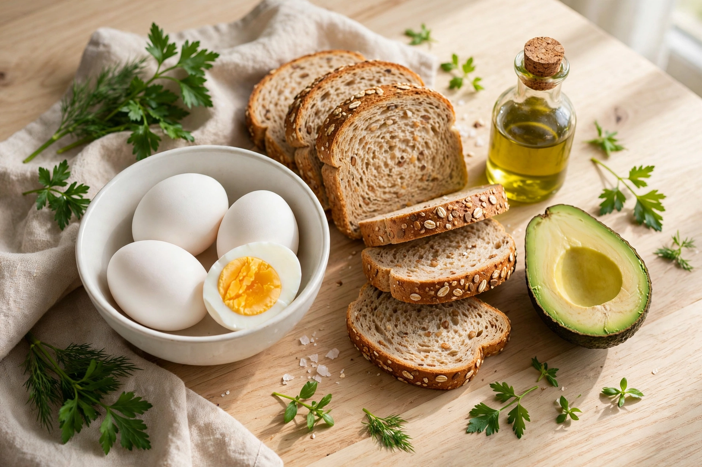
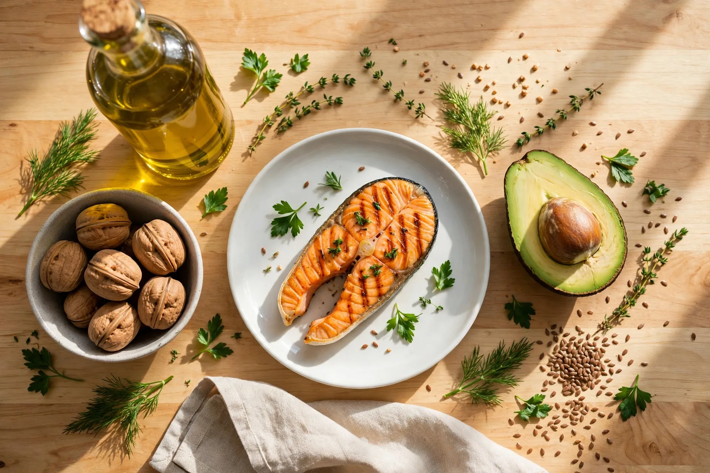

24 نوفمبر 2026 · الإنفلونزا والمناعة · أخبار في عالم الصحة
«إنفلونزا الرجال» حقيقية؟ دراسة على الفئران تجد أن الذكور يعانون مضاعفات فيروسية أشد
هل يخفف الكركم آلام خشونة الركبة؟ مراجعة كوكرين تشكك في فعاليته
 قبل أن تضعف الذاكرة: تغيّرات النوم والشهية قد تكشف بدايات ألزهايمر
الجلوس الطويل يضر القلب حتى مع ممارسة الرياضة: ما كشفته دراسة التوائم في كولورادو
قبل أن تضعف الذاكرة: تغيّرات النوم والشهية قد تكشف بدايات ألزهايمر
الجلوس الطويل يضر القلب حتى مع ممارسة الرياضة: ما كشفته دراسة التوائم في كولورادو
 علامات صامتة قد تكشف إصابة طفلك بالجنف: اختبار آدم البسيط في المنزل
علامات صامتة قد تكشف إصابة طفلك بالجنف: اختبار آدم البسيط في المنزل
 أول لقاح إنفلونزا بتقنية mRNA يدخل الاستخدام التجاري: ماذا كشفت التجربة عن فعاليته؟
أول لقاح إنفلونزا بتقنية mRNA يدخل الاستخدام التجاري: ماذا كشفت التجربة عن فعاليته؟
 كثافة عظام العمود الفقري ترتبط بصحة الدماغ والذاكرة: ماذا وجدت دراسة جونز هوبكنز؟
كثافة عظام العمود الفقري ترتبط بصحة الدماغ والذاكرة: ماذا وجدت دراسة جونز هوبكنز؟
 دهون البطن ترتبط بتراكم بروتينات ألزهايمر في الدماغ: ماذا كشفت دراسة جديدة؟
دهون البطن ترتبط بتراكم بروتينات ألزهايمر في الدماغ: ماذا كشفت دراسة جديدة؟
 التهاب الكبد أ في المغرب: قفزة كبيرة بعد الجائحة وتركّز الإصابات في جهتين
التهاب الكبد أ في المغرب: قفزة كبيرة بعد الجائحة وتركّز الإصابات في جهتين

بيضتان في اليوم وينخفض الكولسترول السيئ؟ دراسة 2025 تقلب فهمنا للبيض والدهون المشبعة السكري من النوع الثاني يُرقّق قشرة الدماغ بسرعة أكبر: ضبط السكر يحمي الدماغ أيضاً
سرعة المشي مهمة بقدر عدد الخطوات: أقل من 5,000 خطوة سريعة تعادل 7,500 خطوة بطيئة
السكري من النوع الثاني يُرقّق قشرة الدماغ بسرعة أكبر: ضبط السكر يحمي الدماغ أيضاً
سرعة المشي مهمة بقدر عدد الخطوات: أقل من 5,000 خطوة سريعة تعادل 7,500 خطوة بطيئة
 القهوة والقلب: كوبان إلى ثلاثة أكواب يومياً يرتبطان بانخفاض خطر أمراض القلب بنسبة 15%
خرافات غذائية نصدقها كل يوم: الكربوهيدرات والسعرات والدهون — ما الحقيقة؟
القهوة والقلب: كوبان إلى ثلاثة أكواب يومياً يرتبطان بانخفاض خطر أمراض القلب بنسبة 15%
خرافات غذائية نصدقها كل يوم: الكربوهيدرات والسعرات والدهون — ما الحقيقة؟
 النوم مع الضوء مضاءً يهدد صحة القلب: ماذا وجدت دراسة شملت أكثر من 70 ألف شخص؟
النوم مع الضوء مضاءً يهدد صحة القلب: ماذا وجدت دراسة شملت أكثر من 70 ألف شخص؟
 بكتيريا في الأمعاء تساعد على حرق الدهون الحشوية: اكتشاف جديد — لكنه حتى الآن في الفئران فقط
الوحدة المزمنة ترفع خطر الخرف بنسبة 38%: الوحدة العابرة لا تفعل ذلك
بكتيريا في الأمعاء تساعد على حرق الدهون الحشوية: اكتشاف جديد — لكنه حتى الآن في الفئران فقط
الوحدة المزمنة ترفع خطر الخرف بنسبة 38%: الوحدة العابرة لا تفعل ذلك
 دواء جديد مع العلاج الكيميائي يقلّص أورام سرطان البنكرياس لدى 60% من المرضى: ما الذي كشفته التجربة؟
دواء جديد مع العلاج الكيميائي يقلّص أورام سرطان البنكرياس لدى 60% من المرضى: ما الذي كشفته التجربة؟
 العسل أم السكر: أيهما أفضل لصحتك؟ ما قاله تحليل 18 تجربة سريرية
الصيام المتقطع 16:8: هل ينقص الوزن فعلاً بعد سنة؟ ما قالته التجارب
العسل أم السكر: أيهما أفضل لصحتك؟ ما قاله تحليل 18 تجربة سريرية
الصيام المتقطع 16:8: هل ينقص الوزن فعلاً بعد سنة؟ ما قالته التجارب
 الكبد الدهني: هل يمكن عكسه بالغذاء؟ ما قالته تجربتان عشوائيتان في 2026
الكبد الدهني: هل يمكن عكسه بالغذاء؟ ما قالته تجربتان عشوائيتان في 2026
 سورفودوتيد: دواء جديد للسمنة يجتاز اختبار سلامة القلب — ماذا نعرف عنه؟
سورفودوتيد: دواء جديد للسمنة يجتاز اختبار سلامة القلب — ماذا نعرف عنه؟
 منظم ضربات قلب يتبع كهرباء القلب الطبيعية: نتائج تجربة OptimPacing
منظم ضربات قلب يتبع كهرباء القلب الطبيعية: نتائج تجربة OptimPacing
 منظمة الصحة العالمية و21 دولة يتعهدون بخفض السمنة 5% بحلول 2030: ما الخطة؟
منظمة الصحة العالمية و21 دولة يتعهدون بخفض السمنة 5% بحلول 2030: ما الخطة؟
 حبة واحدة للضغط بدل ثلاث: كيف ضاعفت تجربة جديدة نسبة السيطرة على ضغط الدم؟
حبة واحدة للضغط بدل ثلاث: كيف ضاعفت تجربة جديدة نسبة السيطرة على ضغط الدم؟
 دواءان للقلب خفّضا الأرقام ولم يمنعا الجلطات: ما الذي كشفته تجربتا HORIZON وZEUS؟
دواءان للقلب خفّضا الأرقام ولم يمنعا الجلطات: ما الذي كشفته تجربتا HORIZON وZEUS؟
 الصداع النصفي مع التدخين: خطر السكتة يتضاعف أكثر من 3 مرات قبل سن الستين
الصداع النصفي مع التدخين: خطر السكتة يتضاعف أكثر من 3 مرات قبل سن الستين
 جمّد خبزك ثم حمّصه: هل يخفض ذلك سكر الدم فعلاً؟ ما كشفته الدراسات
جمّد خبزك ثم حمّصه: هل يخفض ذلك سكر الدم فعلاً؟ ما كشفته الدراسات
 الحرارة تُضعف الأدوية: مبادرة SHIELD تحذر — دواؤك قد يفقد قوته دون أن تلاحظ
الحرارة تُضعف الأدوية: مبادرة SHIELD تحذر — دواؤك قد يفقد قوته دون أن تلاحظ
 لماذا نمرض أكثر في الشتاء؟ البرد والأنف والهواء الجاف — ما يقوله العلم
لماذا نمرض أكثر في الشتاء؟ البرد والأنف والهواء الجاف — ما يقوله العلم
 المضادات الحيوية تفشل: الكليبسيلا المقاومة ارتفعت 72% — تحذير منظمة الصحة العالمية في 2026
المضادات الحيوية تفشل: الكليبسيلا المقاومة ارتفعت 72% — تحذير منظمة الصحة العالمية في 2026
 الميلاتونين والقلب: هل يرفع الاستخدام الطويل خطر فشل القلب فعلاً؟ ما قالته الدراسة وما لم تقله
الميلاتونين والقلب: هل يرفع الاستخدام الطويل خطر فشل القلب فعلاً؟ ما قالته الدراسة وما لم تقله
 أسونديكسيان: دواء جديد يقلل خطر الجلطة الثانية بنسبة 26% — لمن يناسب ولمن لا يناسب؟
أسونديكسيان: دواء جديد يقلل خطر الجلطة الثانية بنسبة 26% — لمن يناسب ولمن لا يناسب؟
 باكسدروستات: دواء ضغط الدم الذي يستمر مفعوله سنتين بعد إيقافه؟ ما كشفته دراسة NEJM في 2026
باكسدروستات: دواء ضغط الدم الذي يستمر مفعوله سنتين بعد إيقافه؟ ما كشفته دراسة NEJM في 2026
 دليل الحجامة في الدار البيضاء: الأنواع، وكيف تختار مركزاً، وماذا يحدث في الجلسة
الولايات المتحدة تفقد صفة القضاء على الحصبة بعد 26 عاماً وسط تفشٍّ قياسي
دليل الحجامة في الدار البيضاء: الأنواع، وكيف تختار مركزاً، وماذا يحدث في الجلسة
الولايات المتحدة تفقد صفة القضاء على الحصبة بعد 26 عاماً وسط تفشٍّ قياسي
 هلام قابل للحقن يعيد بناء الغضروف في الركبة؟ ما كشفته دراسة على الأغنام في 2024
تحليل دم جديد يقيس تقدّم الزهايمر بدقة أكبر؟ ما كشفته دراسة JAMA في 2026
هلام قابل للحقن يعيد بناء الغضروف في الركبة؟ ما كشفته دراسة على الأغنام في 2024
تحليل دم جديد يقيس تقدّم الزهايمر بدقة أكبر؟ ما كشفته دراسة JAMA في 2026
 مكمّل غذائي للألم المزمن؟ ما كشفته دراسة جديدة عن الفيبروميالجيا بعد 12 شهراً
مكمّل غذائي للألم المزمن؟ ما كشفته دراسة جديدة عن الفيبروميالجيا بعد 12 شهراً
 لماذا يتحسّن طعم القهوة والشوكولاتة مع الوقت؟ الدماغ يتعلم النكهات من المعدة
لماذا يتحسّن طعم القهوة والشوكولاتة مع الوقت؟ الدماغ يتعلم النكهات من المعدة
 الشوكولاتة الداكنة والقلب والمزاج: ماذا قالت ثلاث دراسات في 2026؟
الشوكولاتة الداكنة والقلب والمزاج: ماذا قالت ثلاث دراسات في 2026؟
 النظام الغذائي المتوسطي والعمر البيولوجي: هل يجعلك طعامك أصغر سناً فعلاً؟
النظام الغذائي المتوسطي والعمر البيولوجي: هل يجعلك طعامك أصغر سناً فعلاً؟
 ببتيدات الحليب والذاكرة: ما الذي أظهرته تجربة كورية جديدة ودراسات سابقة؟
ببتيدات الحليب والذاكرة: ما الذي أظهرته تجربة كورية جديدة ودراسات سابقة؟
 الشمس موجودة والفيتامين ناقص: لماذا يعاني سكان البلدان المشمسة من نقص فيتامين د؟
ظهرك يؤلمك؟ قد تكون المشكلة أبعد من الظهر: الالتهاب والقلب والكبد في 3 دراسات حديثة
الشمس موجودة والفيتامين ناقص: لماذا يعاني سكان البلدان المشمسة من نقص فيتامين د؟
ظهرك يؤلمك؟ قد تكون المشكلة أبعد من الظهر: الالتهاب والقلب والكبد في 3 دراسات حديثة

بدّل دهنك تحمِ ركبتك؟ ماذا كشفت دراسة 2026 عن الدهون وخشونة المفاصل؟ حفنة كاوكاو كل يوم: هل تحسّن الذاكرة وتدفق الدم إلى الدماغ؟ ما كشفته تجربة هولندية في 2026
حفنة كاوكاو كل يوم: هل تحسّن الذاكرة وتدفق الدم إلى الدماغ؟ ما كشفته تجربة هولندية في 2026
 انقطاع الطمث ليس انحداراً بطيئاً… بل "منحدر" مفاجئ؟ ما كشفته 300 مليون تحليل
انقطاع الطمث ليس انحداراً بطيئاً… بل "منحدر" مفاجئ؟ ما كشفته 300 مليون تحليل
 هل يقدر السكري من النوع الثاني أن يتراجع بلا خسارة للعضلات؟ ما كشفته تجربة 2026
هل يقدر السكري من النوع الثاني أن يتراجع بلا خسارة للعضلات؟ ما كشفته تجربة 2026
 ماشي غير الماكلة: أسلوب الحياة المتوسطي كاملاً يقلل خطر الوفاة بنسبة 30 بالمئة — ما كشفته دراسة 2026
ماشي غير الماكلة: أسلوب الحياة المتوسطي كاملاً يقلل خطر الوفاة بنسبة 30 بالمئة — ما كشفته دراسة 2026
 دواء واحد للسمنة يحسّن النوم ويخفف ألم الركبة؟ ما كشفته نتائج ريتاتروتيد في 2026
دواء واحد للسمنة يحسّن النوم ويخفف ألم الركبة؟ ما كشفته نتائج ريتاتروتيد في 2026
 هل يبدأ النسيان من الطبق؟ ماذا كشفت أحدث الدراسات عن الغذاء والذاكرة؟
هل يبدأ النسيان من الطبق؟ ماذا كشفت أحدث الدراسات عن الغذاء والذاكرة؟
 قبل المسكنات وقبل الأشعة: ما العلاج الأول لآلام الظهر حسب منظمة الصحة العالمية؟
سنوات من المسكنات القوية وظهرك ما زال يؤلمك: ما كشفته دراسة 2026
قبل المسكنات وقبل الأشعة: ما العلاج الأول لآلام الظهر حسب منظمة الصحة العالمية؟
سنوات من المسكنات القوية وظهرك ما زال يؤلمك: ما كشفته دراسة 2026
 السقوط ليس حتمياً بعد الستين: 5 تمارين تحمي توازنك — وهذا ما أثبته العلم
السقوط ليس حتمياً بعد الستين: 5 تمارين تحمي توازنك — وهذا ما أثبته العلم
 من سن 35 وجسمك يخسر عضلاته بصمت — وهذا ما يوقف النزيف
تنام أقل من 6 ساعات؟ مفاصلك تدفع الثمن — ما كشفته دراسة 2026
من سن 35 وجسمك يخسر عضلاته بصمت — وهذا ما يوقف النزيف
تنام أقل من 6 ساعات؟ مفاصلك تدفع الثمن — ما كشفته دراسة 2026
مقالات أصلية موثقة بالمصادر العلمية: معلومة موثوقة، ونصيحة عملية، وروابط الأبحاث الأصلية
24 نوفمبر 2026 · الإنفلونزا والمناعة · أخبار في عالم الصحة
24 نوفمبر 2026 · خشونة الركبة · أخبار في عالم الصحة
24 نوفمبر 2026 · النوم والذاكرة · أخبار في عالم الصحة
24 نوفمبر 2026 · القلب والحركة · أخبار في عالم الصحة
23 نوفمبر 2026 · صحة الأطفال والعمود الفقري
23 نوفمبر 2026 · اللقاحات والإنفلونزا
23 نوفمبر 2026 · العظام والدماغ
23 نوفمبر 2026 · السمنة والدماغ
23 نوفمبر 2026 · الكبد واللقاحات
23 نوفمبر 2026 · البيض والكولسترول
22 نوفمبر 2026 · السكري والدماغ
22 نوفمبر 2026 · المشي وطول العمر
22 نوفمبر 2026 · القهوة والقلب
22 نوفمبر 2026 · التغذية والخرافات
22 نوفمبر 2026 · النوم والقلب
22 نوفمبر 2026 · بكتيريا الأمعاء والسمنة
22 نوفمبر 2026 · الوحدة والخرف
22 نوفمبر 2026 · السرطان والأدوية
21 نوفمبر 2026 · التغذية
21 نوفمبر 2026 · التغذية والوزن
21 نوفمبر 2026 · الكبد والتغذية
21 نوفمبر 2026 · السمنة والأدوية
21 نوفمبر 2026 · القلب
21 نوفمبر 2026 · السمنة والصحة العامة
21 نوفمبر 2026 · ضغط الدم
21 نوفمبر 2026 · القلب والأدوية
20 نوفمبر 2026 · الصداع النصفي والسكتة
20 نوفمبر 2026 · التغذية وسكر الدم
20 نوفمبر 2026 · الأدوية والمناخ
20 نوفمبر 2026 · الشتاء والمناعة
20 نوفمبر 2026 · المضادات الحيوية والعدوى
20 نوفمبر 2026 · النوم والقلب
20 نوفمبر 2026 · السكتة الدماغية والأدوية
20 نوفمبر 2026 · ضغط الدم والأدوية
20 نوفمبر 2026 · الحجامة
19 نوفمبر 2026 · اللقاحات والصحة العامة
19 نوفمبر 2026 · المفاصل والغضروف
19 نوفمبر 2026 · الزهايمر والدماغ
19 نوفمبر 2026 · الألم المزمن والفيبروميالجيا
19 نوفمبر 2026 · الدماغ والتغذية
19 نوفمبر 2026 · التغذية والقلب
19 نوفمبر 2026 · التغذية والشيخوخة
19 نوفمبر 2026 · الذاكرة والتغذية
18 نوفمبر 2026 · الفيتامينات والصحة
18 نوفمبر 2026 · آلام الظهر والصحة العامة
18 نوفمبر 2026 · التغذية والمفاصل
18 نوفمبر 2026 · التغذية والذاكرة
18 نوفمبر 2026 · صحة المرأة والعظام
18 نوفمبر 2026 · السكري والعضلات
18 نوفمبر 2026 · التغذية وأسلوب الحياة
18 نوفمبر 2026 · السمنة والنوم والمفاصل
16 نوفمبر 2026 · الغذاء والذاكرة
9 نوفمبر 2026 · آلام الظهر والعلاج الأول
2 نوفمبر 2026 · آلام الظهر والأدوية
27 أكتوبر 2026 · النوم والمفاصل
27 أكتوبر 2026 · القوة والعضلات
27 أكتوبر 2026 · التوازن والوقاية من السقوط
24 نوفمبر 2026 · خشونة الركبة · أخبار في عالم الصحة
24 نوفمبر 2026 · النوم والذاكرة · أخبار في عالم الصحة
24 نوفمبر 2026 · القلب والحركة · أخبار في عالم الصحة
23 نوفمبر 2026 · صحة الأطفال والعمود الفقري